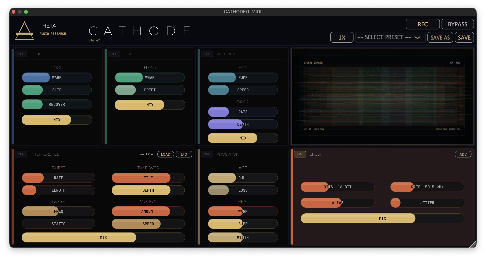
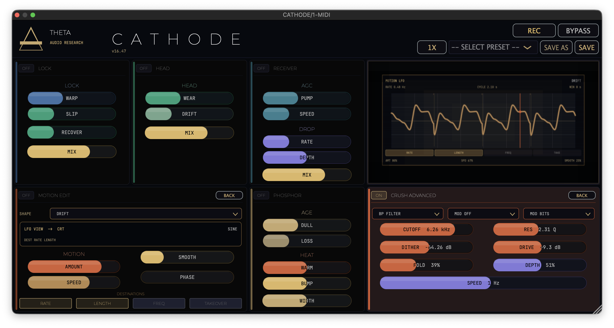

CATHODE treats degradation as one coherent system. Instead of generic lo-fi modules, it operates on the premise that the sound is the transmission, and the plugin is the unstable machine carrying it. At the core of CATHODE is a signal path built around heat, instability, interruption, and control. It can add tube-like weight and asymmetry, induce worn-playback movement, capture fractured glitch states, and push material into forms of failure that still feel musical.
Authorization includes VST3, AU, and AAX formats, standalone target support, and per-module factory/user preset menus.
INITIALIZE_ACQUISITION // $129.00CONTEXTUAL_VISUAL_BAYS

MOTION LFO LEFT BAY + CRUSH SCOPE
The updated wide 1x layout hosts two independent contextual visual bays that can run concurrently. When INTERFERENCE’s MOTION EDIT is open, the LFO maps directly across a dedicated left visual engine positioned over the LOCK and HEAD areas. Simultaneously opening CRUSH ADVANCED converts the main CRT center from standard SIGNAL DAMAGE into a hardware-calibrated CRUSH SCOPE.
MODULE_DETAIL
LOCK
Unstable continuity, sync stress, and recovery behavior. Bends the timing and posture of the signal as if the playback track or raster line is being forced away from its baseline lock. WARP skews the structural alignment, while SLIP causes the program timeline to slide out from beneath itself, leaving RECOVER to govern the exact timing of its return to stability.
HEAD
Wear, drift, and imperfect contact. Grounded entirely in physical and mechanical uncertainty rather than generic LFO movements. WEAR decays the trustworthiness of the path, while DRIFT introduces slow, non-periodic alignment sweeps to replicate mechanical aging.
RECEIVER
AGC breathing and broken continuity. The AGC network mimics compensation stress in an unstable receiver circuit. PUMP drives the depth of the signal's gain swell, while SPEED adjusts response and recovery times. On the alternate channel, the DROP path cuts continuity entirely via discrete RATE and DEPTH interruption gates.
PHOSPHOR
Heat, fatigue, glow, and display chemistry. Delivers a distinct overheated monitor character. DULL / LOSS systematically robs the transmission of transient freshness and local energy to emulate component fatigue. WARM / BUMP generates rich, lit-glass pressure bands across the upper mids. Stereo WIDTH has been detached globally as an always-active mix control.
INTERFERENCE
Bursts, static, rival signals, takeover, and motion. Transforms CATHODE into a contested transmission path. Features a smoothed, non-looping random RF static bed shaped by STATIC DRIFT and STATIC SMOOTH. Supports external file injection to fight for channel ownership via TAKEOVER depths. Contains a dedicated per-module factory/user preset system (RF DRIFT, STATIC BED, RIVAL BURST, TAKEOVER).
MOTION EDIT / MOTION LFO
Tempo-synced modulation environment. Unlocks deep, re-triggerable parameter movement across six shapes: SINE, TRIANGLE, SAW, SQUARE, RANDOM, and DRIFT. SYNC offers FREE, HOST, BAR, and BEAT timing curves to explicitly lock cycles onto host tempo, while RETRIG maps re-trigger behaviors per NOTE, BAR, LOAD, or FREE. When active, it displays cycle ticks, rate in Hz, and afterimage drift inside the left visual bay.
CRUSH
Converter damage and digital destruction. Spans the lower-right quadrant as a comprehensive digital destruction bay. BITS drops converter tracking depth down to low-bit failure tiers, while RATE steps down the effective clock shown in absolute Hz/kHz units. Parameter paths are smoothed to glide seamlessly and eliminate zipper noise. Features discrete module presets (12 BIT, DARK CVTR, ALIAS MIR, FOLDED).
CRUSH ADVANCED
Broken hardware logic. Opens the secondary converter design suite. Links variable post-crush FILTER selections (LP, HP, BP) and resonant Q parameters with adjustable DITHER caps. Integrates LFO/Envelope modulation tracking to drive depth targets. DRIVE forces input saturation directly ahead of the quantizer, while FOLD crossfades peak linear limits into complex signal folding curves.
SIGNAL_DAMAGE_CRT
- Procedural Analysis Evaluates dry input taps against gain-matched processed outputs to alter raster behavior.
- Raster Trauma Sound pressure translates dynamically into scanline motion, RGB splitting, horizontal tearing, bloom, and sync instability.
- CRUSH SCOPE Mode Secondary contextual display displaying bit-depth stairs, sample grids, alias shards, and dither floors.
TECHNICAL_SPEC
- Formats VST3, AU, AAX, Standalone [macOS Intel & Apple Silicon Native]
- Oversampling 48kHz internal conversion layer with zero baseline footprint.
- Global Strips Header-level REC capture to WAV and soft dry/wet global BYPASS.
- Engineering THETA Audio Research // v16.72 Master Deployment